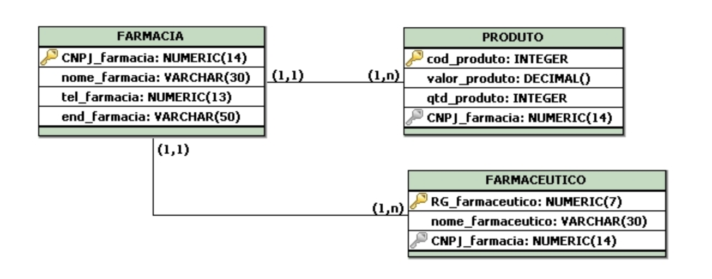

Banco de Dados: É um sistema de armazenamento que organiza dados em tabelas relacionadas. Cada tabela tem colunas e linhas, e a relação entre tabelas é feita por chaves primárias e estrangeiras.
Banco de Dados Não Relacional: Diferente do relacional, os dados são armazenados de forma mais flexível, geralmente em documentos JSON, coleções de chave-valor ou gráficos.
Dicionário de Dados: Refere-se a um repositório que armazena informações sobre os dados do sistema, como tipo de dados, nome de variáveis, e descrições.
Diagramas Lógicos:
MER (Modelo Entidade-Relacionamento): Um diagrama que descreve a estrutura de um banco de dados, mostrando entidades e seus relacionamentos.
DER (Diagrama Entidade-Relacionamento): Semelhante ao MER, mas é a representação visual dos dados e suas relações.

O que a empresa usa?
Nossa empesa utiliza com mais frequência o banco de dados relacional e o não relacional
Porque usamos esses tipos?
Modelagem de dados estruturados: Bancos relacionais são ideais para armazenar dados que podem ser organizados em tabelas com relações entre si (como vendas, clientes e produtos)
Transações ACID: Garantem a integridade e a consistência dos dados, algo crítico em ambientes financeiros, logísticos, e outros.
Ampla adoção e suporte: Muitas ferramentas de software corporativo e frameworks de desenvolvimento suportam RDBMS, tornando-os uma escolha natural
Escalabilidade: Bancos NoSQL são altamente escaláveis, permitindo que empresas lidem com grandes volumes de dados e altos níveis de tráfego.
Flexibilidade: Permitem armazenar dados em formatos não estruturados (como JSON ou BSON), o que é ideal para certos tipos de aplicativos, como sistemas de recomendação ou análise de dados de redes sociais.
Desempenho: Com a capacidade de processar grandes volumes de dados rapidamente, NoSQL é a escolha para empresas com demandas de tempo real.